A / B · Ways of Coming Closer
- 英文项目名由16px调整为12px；中文简介由两列扩为四列，手机端改为通栏。
- 平面图由与长桌照片并排的四列单元，改为独立的左置九列单元。
- 九海报组合展示板获得九列单元；四张独立海报改为桌面四列、手机两列的完整系列。
- 普通模块按前后各75px留白；图注按桌面40px、平板32px、手机24px间距。
两版均保留整图单屏查看要求。B只在图像原生高度超出可用屏高时等比收小内层图片，声明的主网格、单元和padding不变。
静态检查与浏览器四档检查已完成。两版均保留20张图片、原文、图注及媒体顺序，正式入口保持A。
1440x900 · 首图

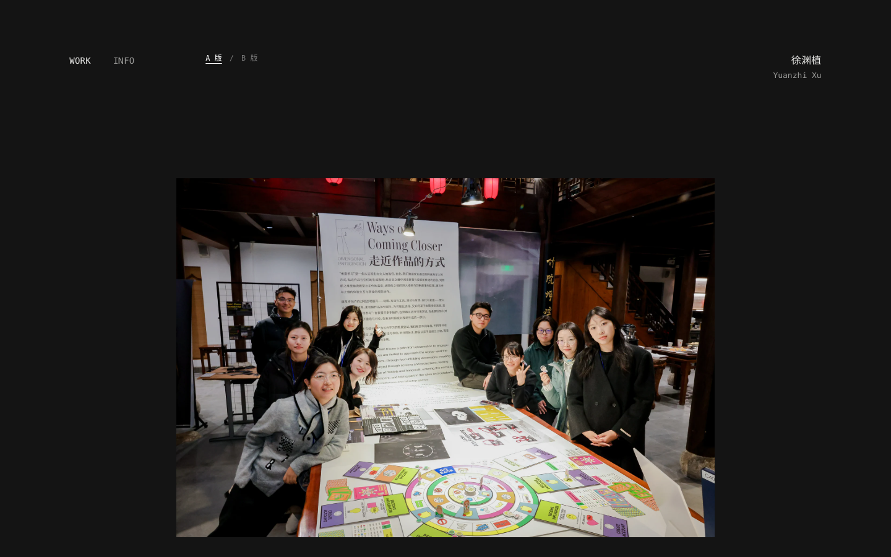

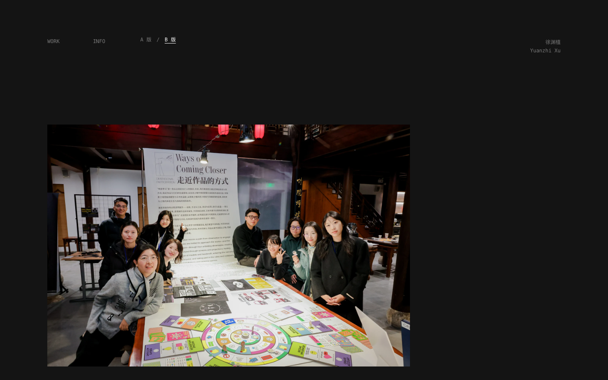

1440x900 · 项目资料

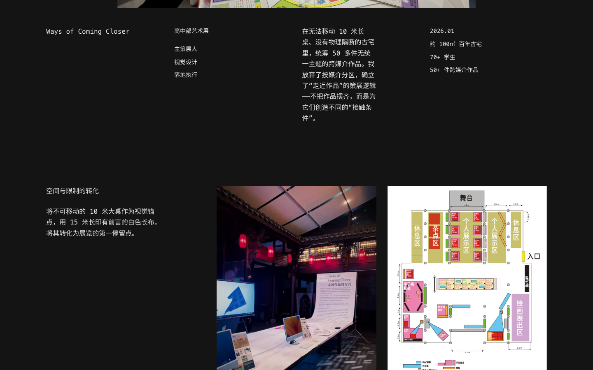

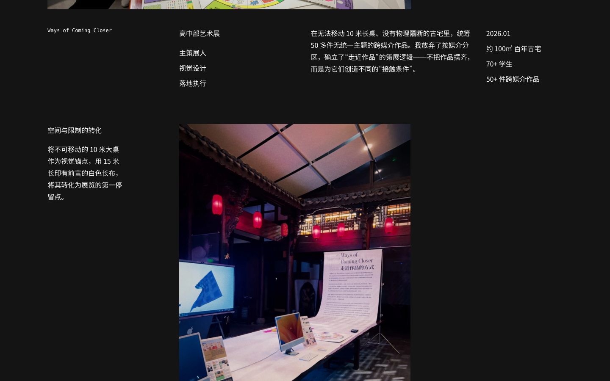

1440x900 · 平面图

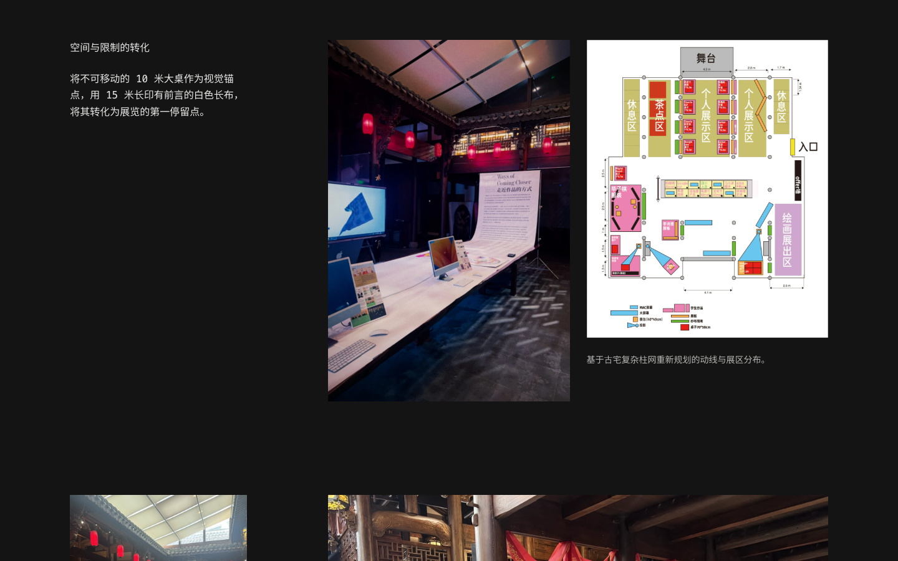

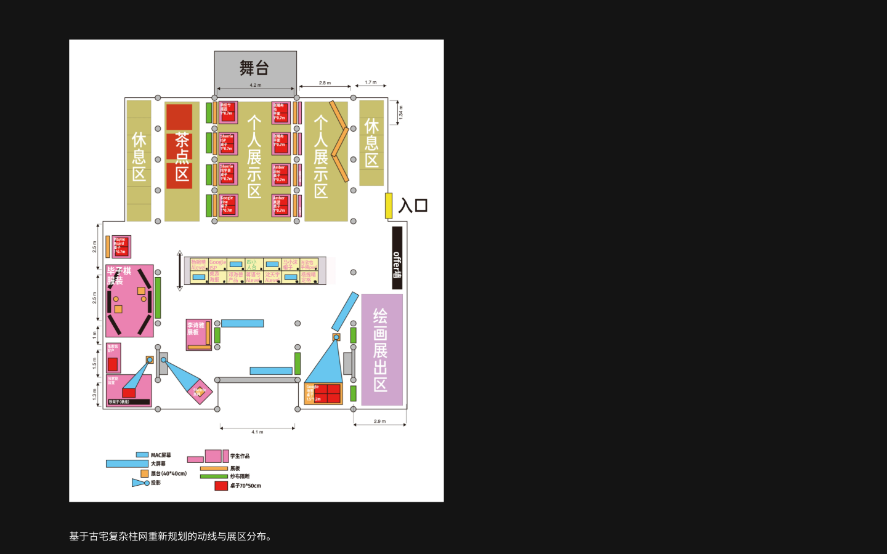

1440x900 · 海报组合

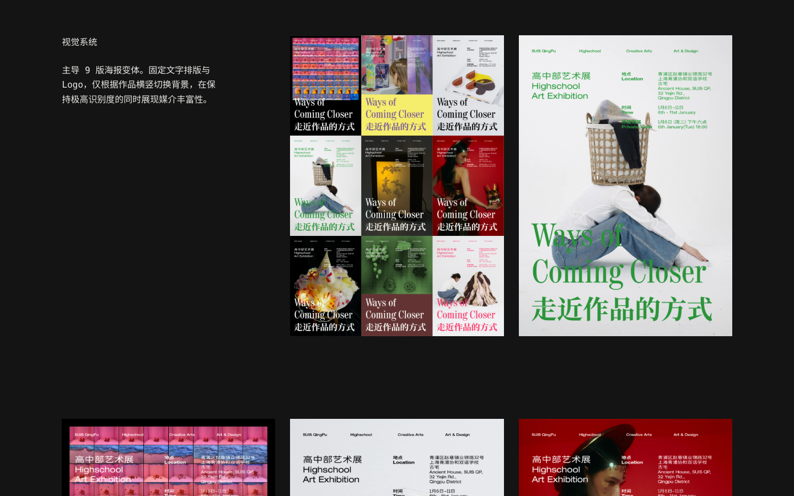

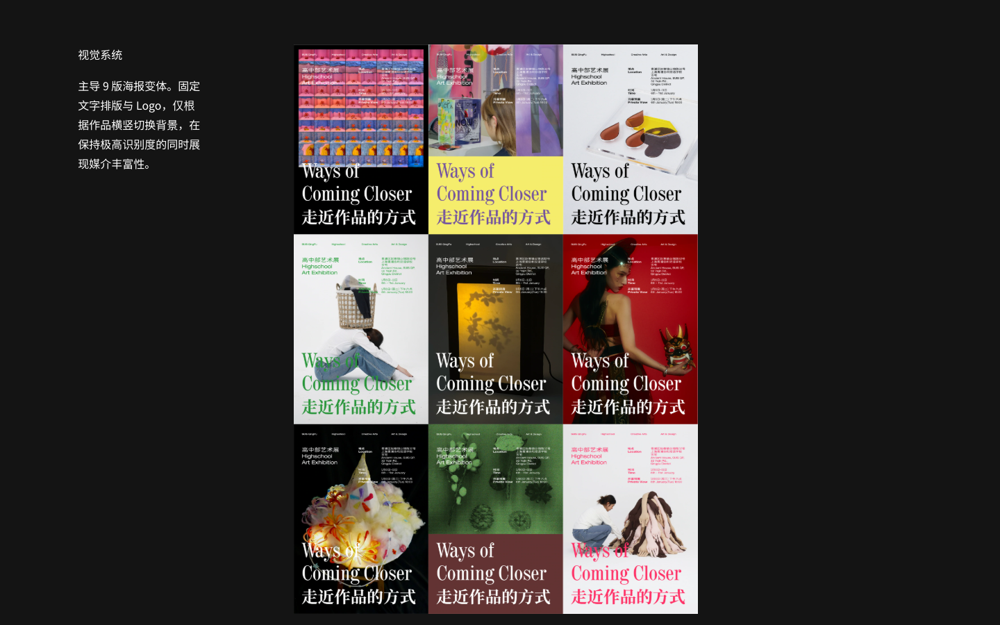

390x844 · 首图

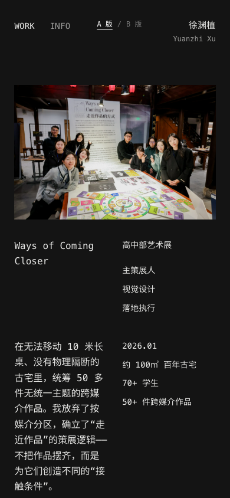

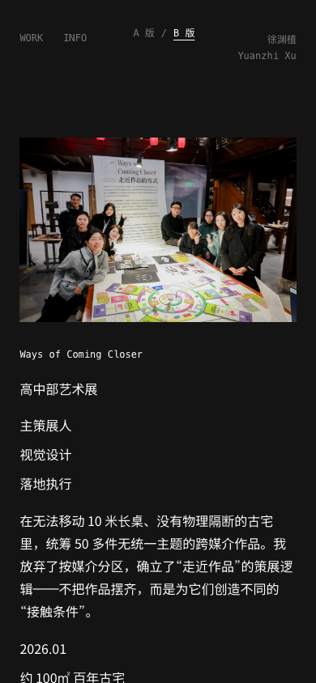

390x844 · 项目资料

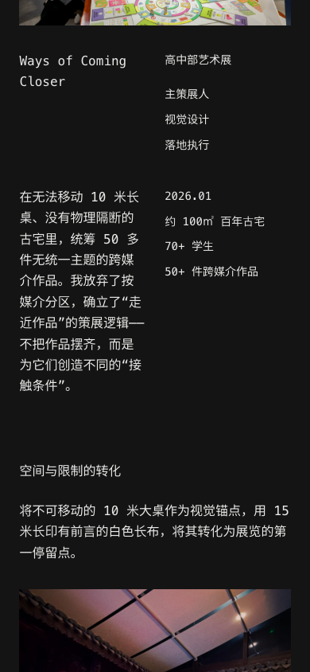

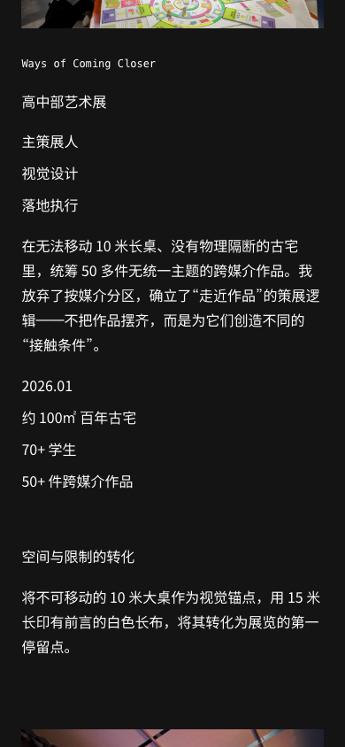

390x844 · 平面图

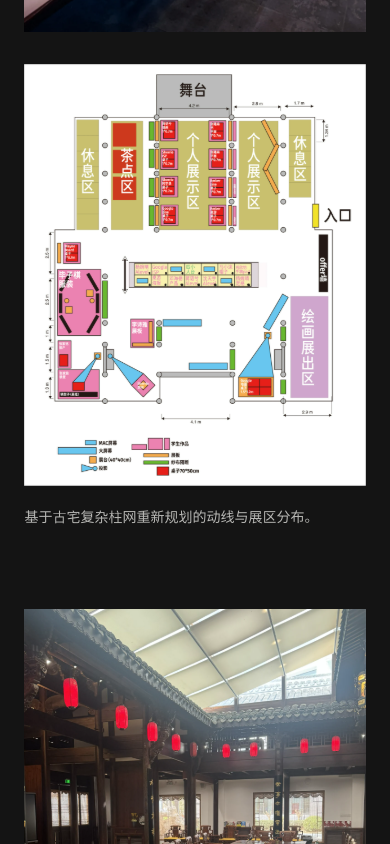

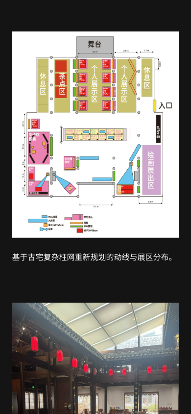

390x844 · 海报组合

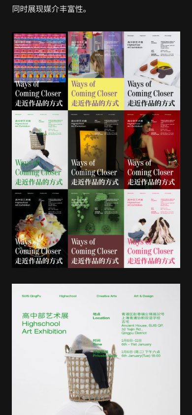

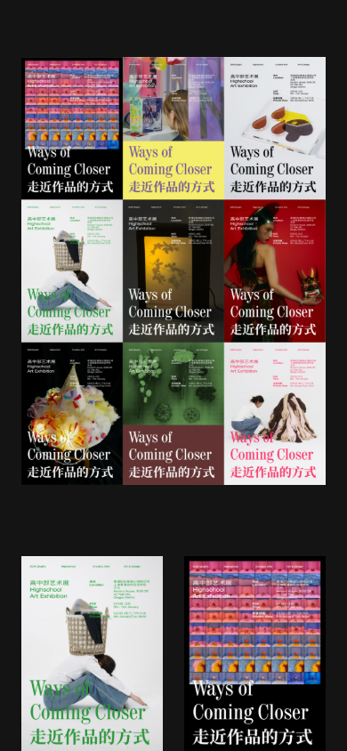